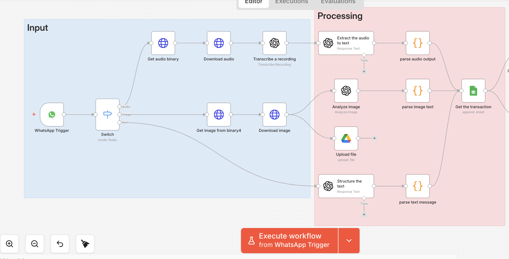
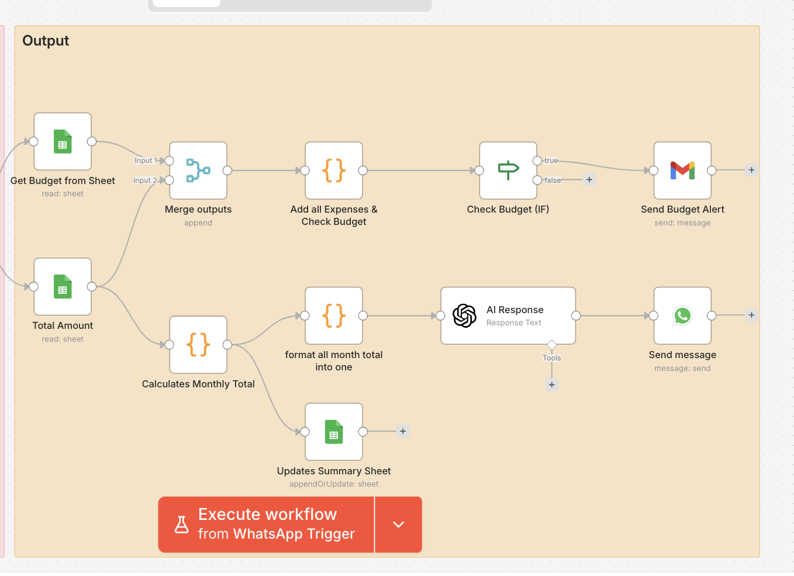

Most budgeting apps fail for the same reason: they ask you to open a separate app and manually log every purchase. That friction is exactly why so many of us start a budget tracker in January and abandon it by February. So I built a finance assistant that lives inside the app people already have open all day — WhatsApp. I led the n8n workflow architecture, the routing logic, and the prompt engineering behind the AI extraction layer; my teammate Aqsa Bagwan led the front-facing design and presentation.
Text it "Coffee 5.50." Send a photo of a receipt. Leave a voice note walking out of a store. The assistant extracts the amount, categorizes the spend, logs it, checks it against your budget, and texts back a confirmation. No new app, no manual entry, no friction.
The core idea: meet people where they already are
The system supports three input types — text, voice, and image — because real spending doesn't happen in one format. Sometimes you type it. Sometimes you're driving and want to talk it out. Sometimes you just have a receipt in hand and it's faster to snap a photo than describe it. Whatever format the message arrives in, the goal is the same: turn unstructured input into a clean, structured transaction record, with real-time feedback and budget alerts sent straight back to WhatsApp.
System architecture: five layers, one flow
I structured the workflow into five distinct layers:
- Input Layer — a WhatsApp trigger listens for incoming messages, and a Switch node routes them based on type: audio, image, or text.
- Processing Layer — each input type gets its own AI pipeline. Audio is transcribed to text, images are analyzed for receipt data, and text is parsed directly. All three converge into a common structured format.
- Data Layer — Google Sheets acts as the database. Transactions are logged in one sheet; budgets are tracked separately per month.
- Logic Layer — Code nodes handle the math: parsing, formatting, monthly totals, daily spending, and shaping the data for the AI to reason about.
- Output Layer — responses go back out through WhatsApp and email: transaction confirmations, budget alerts, and weekly summaries.
A separate scheduled branch runs weekly: it pulls the week's transactions, sorts and totals them, and emails a spending summary automatically — so insights show up even when nobody has asked for them.


Handling three input types without three separate systems
A Switch node checks the incoming WhatsApp message type and sends it down one of three paths: audio is downloaded, transcribed, then parsed; images are downloaded, uploaded to Google Drive for record-keeping, then read by a vision model for receipt details; text is parsed directly. Each path ends in its own parsing step, and a Merge node brings all three back into a single, consistent transaction object.
Rather than forcing one giant prompt to handle every input type, I kept the pipelines separate and let each one specialize, then merged the outputs downstream. It made debugging dramatically easier — if something broke, I knew immediately which pipeline to check.
The real work: prompt engineering for structured, non-hallucinated output
This is where most of my iteration time actually went. An AI that occasionally guesses a total amount or invents a category isn't useful for finance — it's actively dangerous. So I built the prompts around three hard constraints:
- Strict output format — every extraction prompt demands valid JSON only, with an explicit schema: date, vendor, total amount, tax, currency, payment method, category (locked to a fixed list), line items, description, and receipt number.
- Explicit anti-hallucination rules — the model is told not to infer missing values. If a field isn't in the receipt, it comes back empty or zero, not guessed.
- Data normalization rules — currency symbols and commas are stripped ("$1,234.50" becomes 1234.50), and when multiple totals appear, the prompt specifies exactly which one to extract.
I also split the AI's job into two separate prompts rather than one do-everything prompt: one for extraction (turning a receipt, voice note, or text message into structured data) and one for response generation (turning that data into a natural, friendly WhatsApp reply). Separating those concerns meant I could tune each independently without one breaking the other.
Return ONLY valid JSON. No markdown, no backticks, no explanation.
{
"date": "string",
"vendor": "string",
"totalAmount": 0.0,
"taxAmount": 0.0,
"currency": "string",
"paymentMethod": "string",
"category": "string", // Food, Transportation, Shopping,
// Utilities, Entertainment, Other
"items": [ { "name": "string", "price": 0.0 } ],
"description": "string",
"receiptNumber": "string"
}Logic layer: where the AI stops and the rules start
Once a transaction is structured, the system doesn't ask the AI to do math — it hands that off to deterministic code nodes. Monthly totals, daily spending, and budget comparisons are calculated in JavaScript, not inferred by a language model. The AI's job is extraction and communication; the arithmetic and conditional logic (if spending exceeds budget, trigger an alert; otherwise, send a normal response) are handled by plain code.
That split mattered a lot. AI models are good at parsing messy, unstructured human input. They are not the tool you want doing your budget math. Keeping those responsibilities separate made the whole system more reliable and easier to trust — a principle I'd apply to any AI system that touches numbers people actually rely on.
Challenges & what I learned
Multi-input handling. Routing three completely different data formats into one consistent output was the biggest architectural challenge. I solved it with separate pipelines per input type, converging through a Merge node rather than one overloaded pipeline trying to handle everything.
Data accuracy. Language models will confidently make things up if you let them. I addressed this with strict prompt constraints, a locked output schema, and validation logic downstream.
Integration issues. Getting WhatsApp, OpenAI, Google Sheets, and Google Drive to all talk to each other cleanly inside one n8n workflow took real debugging time — credential scoping, webhook configuration, and response formatting all needed attention.
AI performs best when it's structured and constrained, not left open-ended — the moment I gave the model a locked schema and explicit "don't guess" rules, output quality jumped. And the moment I stopped asking the AI to do arithmetic and handed that to code instead, the whole system became far more trustworthy. The bigger lesson is about behavior change: a finance tool only works if people actually use it, and the easiest way to get people to track spending consistently is to remove every point of friction between "I spent money" and "it's logged."
Built for my AI Integration & Governance capstone at Humber College, in collaboration with Aqsa Bagwan. Built with n8n, OpenAI, WhatsApp Business API, and Google Sheets.